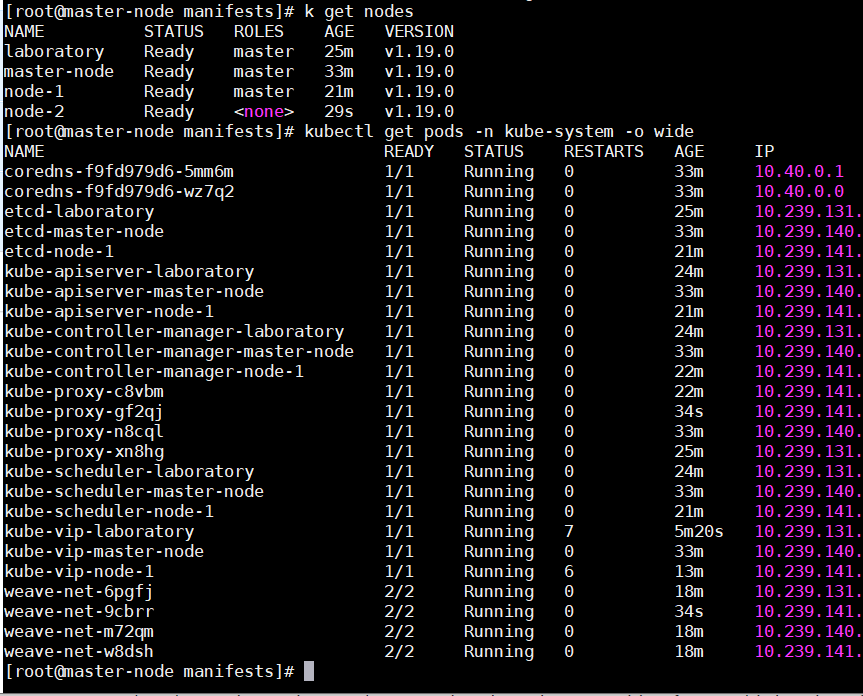

# 准备机器
| IP 地址 | 主机名 | 角色 |
|---|---|---|
| 10.239.140.133 | master-node | master |
| 10.239.131.156 | laboratory | master |
| 10.239.141.123 | node-1 | master |
| 10.239.141.194 | node-2 | worker |
| 10.239.140.51 | k8s-vip | Virtual IP |
总共四台机器，三台做 master, 一台做 work node, 部署好后可以把 master 上污点去掉，照样可以部署 k8s 资源.
Virtual IP 是部署过程中在机器网卡上添加的虚拟 IP, 操作下方有涉及到.Note: k8s-vip地址需要独一无二, 不能与能ping同的所有其它机器的IP地址冲突, 因此, 设置k8s-vip ip地址之前线ping一下改地址看是否能ping通, 如果能平通就换成其它不能ping通, 也就是其它机器还没有占用的IP地址.

# 环境配置
修改机器名字，重开终端就可以看到机器名变了
sudo hostnamectl set-hostname master-node
每台机器 (master 和 node) 都要配置
# 同步各个机器系统时间，否则其它机器通过 token 加入时候可能因为证书时间不到或过期而不能加入 | |
# 同步时间方法请参考 [01 Kubernetes build with kubeadm] | |
# 修改 /etc/hosts | |
vim /etc/hosts | |
...... | |
10.239.140.133 master-node | |
10.239.131.156 laboratory | |
10.239.141.123 node-1 | |
10.239.141.194 node-2 | |
10.239.140.51 k8s-vip | |
# 设置 k8s 相关系统内核参数 | |
cat << EOF > /etc/sysctl.d/k8s.conf | |
net.bridge.bridege-nf-call-iptables = 1 | |
net.bridge.bridege-nf-call-ip6tables = 1 | |
EOF | |
sysctl -p | |
echo 1 > /proc/sys/net/bridge/bridge-nf-call-iptables | |
echo 1 > /proc/sys/net/bridge/bridge-nf-call-ip6tables | |
swapoff -a | |
sed -i '/swap/d' /etc/fstab | |
systemctl stop firewalld.service | |
systemctl disable firewalld | |
setenforce 0 | |
sed -i 's/^SELINUX=.*/SELINUX=disabled/' /etc/selinux/config | |
systemctl stop kubelet | |
systemctl stop docker | |
systemctl restart kubelet | |
systemctl restart docker | |
sysctl net.bridge.bridge-nf-call-iptables=1 | |
sysctl net.bridge.bridge-nf-call-ip6tables=1 | |
# 清理 iptables 规则 | |
yum install ipvsadm -y # apt-get install ipvsadm -y | |
iptables -F && iptables -t nat -F && iptables -t mangle -F && iptables -X | |
ipvsadm -C | |
ipvsadm --clear |
Note:
# 有时候在公司开发机上部署不成功，需要在～/.bashrc 添加 NO_PROXY | |
# 不要忘了添加 127.0.0.1 和 虚拟出来的 Virtual IP | |
cat << EOF >> ~/.bashrc | |
export NO_PROXY=127.0.0.1,<master-node-IP>,<laboratory-IP>,<Node01-IP>,<Node02-IP>,<k8s-vip-IP>, master-node,laboratory,Node01,Node02,k8s-vip | |
EOF | |
source ~/.bashrc |
如果在系统的 ** /etc/environment ** 中添加 proxy, 则 k8s 安装过程 api-server 等组件会先读取 /etc/environment 文件中的 proxy 信息.
cat /etc/environment
http_proxy="http://child-prc.intel.com:913"
https_proxy="http://child-prc.intel.com:913"
no_proxy="127.0.0.1,<master-node-IP>,<laboratory-IP>,<Node01-IP>,<Node02-IP>,<k8s-vip-IP>, master-node,laboratory,Node01,Node02,k8s-vip"
NO_PROXY=$no_proxy
HTTP_PROXY=$http_proxy
HTTPS_PROXY=$https_proxy
source /etc/environment
修改 /etc/hosts 文件内容
vim /etc/hosts | |
...... | |
10.239.140.133 master-node | |
10.239.131.156 laboratory | |
10.239.141.123 node-1 | |
10.239.141.194 node-2 | |
10.239.140.51 k8s-vip |
Note: 下面部署 0.1.5 版本的 kube-vip 时候 上面的 /etc/hosts 文件里的 k8s-vip 修改成如下内容
10.239.140.201 k8s-vip
# kube-vip 方式部署高可用 k8s 集群
official website:
https://github.com/kubernetes/kubeadm/blob/master/docs/ha-considerations.md#kube-vip
https://github.com/plunder-app/kube-vip/blob/master/kubernetes-control-plane.md
# 在三台 master 机器上添加 kube-vip 配置文件
# kube-vip 0.1.1 本地安装 config.yaml 版本
master-node 机器上
mkdir /etc/kube-vip | |
touch /etc/kube-vip/config.yaml |
vim config.yaml
localPeer: | |
id: master-node // 机器hostname, 通过$ hostnamectl set-hostname <HostName>修改 | |
address: 10.239.140.133 // 指定本地IP地址 | |
port: 10000 | |
remotePeers: | |
- id: laboratory | |
address: 10.239.131.156 // 另外一台充当master机器IP地址 | |
port: 10000 | |
- id: node-1 | |
address: 10.239.141.123 // 另外一台充当master机器IP地址 | |
port: 10000 | |
# [...] | |
vip: 10.239.140.51 // 手动写的IP, 但必须在集群子网内, 部署集群后 $ ip addr 查看p8p1网卡下多出了此IP | |
gratuitousARP: true | |
singleNode: false | |
startAsLeader: true // 设置作为三台master机器的leader | |
interface: p8p1 // 用本机的网卡名字, $ ip addr可查看 | |
loadBalancers: | |
- name: API Server Load Balancer | |
type: tcp | |
port: 6444 // configure the load balancer to sit on the standard API-Server port 6443 | |
bindToVip: true | |
backends: | |
- port: 6443 // configure the backends to point to the API-servers that will be configured to run on port 6444 | |
address: 10.239.140.133 | |
- port: 6443 | |
address: 10.239.131.156 | |
- port: 6443 | |
address: 10.239.141.123 | |
# [...] |
laboratory 机器上
touch /etc/kube-vip/config.yaml
vim touch /etc/kube-vip/config.yaml
localPeer: | |
id: laboratory // 改成本机的 | |
address: 10.239.131.156 | |
port: 10000 | |
remotePeers: | |
- id: master-node | |
address: 10.239.140.133 | |
port: 10000 | |
- id: node-1 | |
address: 10.239.141.123 | |
port: 10000 | |
# [...] | |
vip: 10.239.140.51 | |
gratuitousARP: true | |
singleNode: false | |
startAsLeader: false // 不要设置成为leader | |
interface: eno1 // 改成本机的IP地址网卡名 | |
loadBalancers: | |
- name: API Server Load Balancer | |
type: tcp | |
port: 6444 | |
bindToVip: true | |
backends: | |
- port: 6443 | |
address: 10.239.140.133 | |
- port: 6443 | |
address: 10.239.131.156 | |
- port: 6443 | |
address: 10.239.141.123 | |
# [...] |
node-1 机器上
touch /etc/kube-vip/config.yaml
vim touch /etc/kube-vip/config.yaml
localPeer: | |
id: node-1 // 改成本机的 | |
address: 10.239.141.123 | |
port: 10000 | |
remotePeers: | |
- id: master-node | |
address: 10.239.140.133 | |
port: 10000 | |
- id: laboratory | |
address: 10.239.131.156 | |
port: 10000 | |
# [...] | |
vip: 10.239.140.51 | |
gratuitousARP: true | |
singleNode: false | |
startAsLeader: false // 不要设置成为leader | |
interface: enp0s3 // 改成本机的IP地址网卡名 | |
loadBalancers: | |
- name: API Server Load Balancer | |
type: tcp | |
port: 6444 | |
bindToVip: true | |
backends: | |
- port: 6443 | |
address: 10.239.140.133 | |
- port: 6443 | |
address: 10.239.131.156 | |
- port: 6443 | |
address: 10.239.141.123 | |
# [...] |
Use 6443 for both the VIP and the API-Servers, in order to do this we need to specify that the api-server is bound to it's local IP. To do this we use the --apiserver-advertise-address flag as part of the init, this means that we can then bind the same port to the VIP and we wont have a port conflict.
# kube-vip 0.1.5 本地安装 config.yaml 版本
master-node 机器上
touch /etc/kube-vip/config.yaml
vim touch /etc/kube-vip/config.yaml
localPeer: | |
id: master-node | |
address: 10.239.140.137 | |
port: 10000 | |
remotePeers: | |
- id: laboratory | |
address: 10.239.131.157 | |
port: 10000 | |
- id: node01 | |
address: 10.239.140.50 | |
port: 10000 | |
# [...] | |
vip: 10.239.140.201 | |
gratuitousARP: true | |
singleNode: false | |
startAsLeader: true | |
interface: p8p1 | |
loadBalancers: | |
- name: API Server Load Balancer | |
type: tcp | |
port: 6444 | |
bindToVip: true | |
backends: | |
- port: 6443 | |
address: 10.239.140.137 | |
- port: 6443 | |
address: 10.239.131.157 | |
- port: 6443 | |
address: 10.239.140.50 | |
# [...] |
# 部署 High Availability K8s 集群
# 1. master-node 机器上
现在 master-node 机器上配置好 K8s 集群，然后再把其它两个 master 加进来就可以了.
# 0.1.1 版本:
docker run -it --rm plndr/kube-vip:0.1.1 /kube-vip sample manifest \ | |
| sed "s|plndr/kube-vip:'|plndr/kube-vip:0.1.1'|" \ | |
| sudo tee /etc/kubernetes/manifests/kube-vip.yaml |
# 0.1.5 版本:
sudo docker run -it --rm plndr/kube-vip:0.1.5 sample manifest | sudo tee /etc/kubernetes/manifests/kube-vip.yaml |
Ensure that image: plndr/kube-vip:<x> is modified to point to a specific version (0.1.5 at the time of writing), refer to docker hub for details.
Also ensure that the hostPath points to the correct kube-vip configuration, if it isn’t the above path.
vim /etc/kubernetes/manifests/kube-vip.yaml
apiVersion: v1 | |
kind: Pod | |
metadata: | |
creationTimestamp: null | |
name: kube-vip | |
namespace: kube-system | |
spec: | |
containers: | |
- command: | |
- /kube-vip | |
- start | |
- -c | |
- /vip.yaml | |
image: 'plndr/kube-vip:0.1.1' | |
name: kube-vip | |
resources: {} | |
securityContext: | |
capabilities: | |
add: | |
- NET_ADMIN | |
- SYS_TIME | |
volumeMounts: | |
- mountPath: /vip.yaml | |
name: config | |
hostNetwork: true | |
volumes: | |
- hostPath: | |
path: /etc/kube-vip/config.yaml // 跟上面的conf.yaml文件路径对应 | |
name: config | |
status: {} |
# 执行部署 K8s 集群命令
# (0.1.1 版本)
kubeadm init --control-plane-endpoint "10.239.140.51:6444" --apiserver-bind-port 6443 --upload-certs --kubernetes-version "v1.19.0" | |
# api-server 和 kube-vip 公用 6443 端口，需要把 /etc/kube-vip/config 里 loadBalancers.port 也改成 6443: | |
kubeadm init --control-plane-endpoint "10.239.140.51:6443" --apiserver-advertise-address 10.239.140.133 --apiserver-bind-port 6443 --upload-certs --kubernetes-version "v1.19.0" | |
* --control-plane-endpoin: 指定设置的Virtual IP和端口. | |
* --apiserver-advertise-address: 指定第一台宿主机IP, 当Virtual IP所用port端口与apiserver port端口设置成相同时需要此参数. | |
* --apiserver-bind-port: 指定apiserver运行所在的port, 此处与Virutal IP(做load balancing)所运行的port相同都是6443 | |
* --upload-certs: kubeadm部署方式下能够让证书自动上传. |
# (0.1.5 版本)
kubeadm init --control-plane-endpoint "10.239.140.201:6444" --apiserver-bind-port 6443 --upload-certs --kubernetes-version "v1.19.0" |
- --control-plane-endpoint: 指定 Virtual IP 地址和 port 为 6444
- --apiserver-bind-port: 指定 apiserver 运行所在的 port 为 6443
这个 --upload-certs 标志用来将在所有控制平面实例之间的共享证书上传到集群.
当 --upload-certs 与 kubeadm init 一起使用时，主控制平面的证书被加密并上传到 kubeadm-certs 密钥中.
查看部署情况
kubectl get pods -A | |
NAMESPACE NAME READY STATUS RESTARTS AGE | |
<...> | |
kube-system kube-vip-controlplane01 1/1 Running 0 10m |
查看网卡地址上是否多出了一个虚拟 IP 为：10.239.140.51
ip addr |
# 2. laboratory 和 node-1 机器上
先不要在路径 /etc/kubernetes/manifests/ 添加 kube-vip.yaml 文件，this is due to some bizarre kubeadm/kubelet behaviour.
等 laboratory 和 node-1 机器都添加进 master 集群后再添加 kube-vip.yaml, kubeadm 会自动检测 /etc/kubernetes/manifests/ 文件变化并部署 pod.
直接运行如下命令添加进 master 集群.
kubeadm join 10.239.140.133:6443 --token <tkn> \ | |
--discovery-token-ca-cert-hash sha256:<hash> \ | |
--control-plane --certificate-key <key> |
配置 k8s 访问环境变量
这样就能在 laboratory 和 node-1 机器上执行 kubectl 命令了.
第一种:
mkdir -p $HOME/.kube | |
sudo cp -i /etc/kubernetes/admin.conf $HOME/.kube/config | |
sudo chown $(id -u):$(id -g) $HOME/.kube/config |
第二种:
export KUBECONFIG=/etc/kubernetes/admin.conf |
在 master-node 机器上查看 laboratory 和 node-1 机器已经加入 master 控制层面后，再在 laboratory 和 node-1 机器上添加 /etc/kubernetes/manifests/kube-vip.yaml 文件.
修改 api-server 访问地址为本机
这样某一台 master 机器挂了其它机器照样可以正常访问 api-server.
# laboratory 机器上 | |
vim /etc/kubernetes/admin.conf | |
server: https://10.239.131.156:6443 | |
# node-1 机器上 | |
vim /etc/kubernetes/admin.conf | |
server: https://10.239.141.123:6443 |
# 配置 0.1.5 (或者 0.1.1) 版本 kube-vip.yaml
sudo docker run -it --rm plndr/kube-vip:0.1.5 sample manifest | sudo tee /etc/kubernetes/manifests/kube-vip.yaml |
# 3. master-node 机器上
在 master-node 机器上运行查看 pod 运行情况.
kubectl get pods -A | grep vip | |
kube-system kube-vip-controlplane01 1/1 Running 1 16m | |
kube-system kube-vip-controlplane02 1/1 Running 0 18m | |
kube-system kube-vip-controlplane03 1/1 Running 0 20m |
查看 pod/kube-vip-master-node 运行日志
kubectl logs po/kube-vip-master-node -n kube-system | |
time=“2020-08-28T15:33:09Z” level=info msg=“The Node [10.239.140.133:10000] is leading” | |
time=“2020-08-28T15:33:09Z” level=info msg=“The Node [10.239.140.133:10000] is leading” |
部署 CNI 网络
kubectl apply -f "https://cloud.weave.works/k8s/net?k8s-version=$(kubectl version | base64 | tr -d '\n')" |
# 4. node-2 机器上
添加 work node 节点
sudo kubeadm join 10.239.140.133:6443 --token 9vr73a.a8uxyaju799qwdjv --discovery-token-ca-cert-hash sha256:7c2e69131a36ae2a042a339b33381c6d0d43887e2de83720eff5359e26aec866 |
# 查看 kube-vip, api-server 服务进程和监听端口
netstat -nltp | grep 10000 // 列出监听端口10000的进程 | |
Proto Recv-Q Send-Q Local Address Foreign Address State PID/Program name | |
tcp 0 0 10.239.140.133:10000 0.0.0.0:* LISTEN 21353/kube-vip | |
netstat -nltp | grep 6443 // 列出监听端口6443的进程 | |
Proto Recv-Q Send-Q Local Address Foreign Address State PID/Program name | |
tcp6 0 0 :::6443 :::* LISTEN 15700/kube-apiserve | |
netstat -antp // 列出所有tcp进程, State不仅包括Listen的, 还包括已建立链接状态为Established的进程. | |
Proto Recv-Q Send-Q Local Address Foreign Address State PID/Program name | |
tcp6 0 0 :::6443 :::* LISTEN 15700/kube-apiserve | |
tcp 0 0 10.239.140.133:10000 0.0.0.0:* LISTEN 21353/kube-vip | |
tcp 0 0 10.239.140.133:10000 10.239.141.145:48554 ESTABLISHED 21353/kube-vip |
Local Address 可以看作是服务端 IP 和提供服务的监听端口， Foreign Address 可以看作是客户端 IP 和发起链接请求的 IP 地址和请求端口.ESTABLISHED 表示客户端与服务端已经建立 tcp 长链接.LISTEN 表示服务端提供服务的端口仍处于监听状态，等待客户端发起请求.
TCP 才能在 Foreign Address 看到链接的客户端 IP 和端口，而 UDP 无状态是没有的.
由以上输出可看到:
- kube-vip 服务进程编号为 21353, 监听端口为 10000, 所在本机 IP 为 10.239.140.133
- api-server 服务进程编号为 15700, 监听端口为 6443
查看所有链接本机 6443 服务端口的客户端 IP 地址，地址一致的合并，然后连接数从高到底排序.
netstat -antp | grep :6443 | awk '{print $5}' | awk -F ":" '{print $1}' | sort | uniq -c | sort -r -n | |
4 10.239.4.100 // 表示从IP地址为10.239.4.100的客户端请求访问本机6443服务端口的进程数为4 | |
3 10.239.4.80 | |
3 10.239.141.194 | |
3 10.239.141.145 | |
3 | |
2 10.40.0.6 | |
2 10.239.140.53 | |
2 10.239.140.133 | |
2 10.109.19.69 | |
1 10.40.0.9 | |
1 10.40.0.2 | |
1 10.40.0.1 | |
1 10.109.19.68 |
# 去掉 apiserver 配置的 proxy
部署完集群后在公司环境一定要去掉 apiserver 的 proxy 配置，否则会遇到如下问题
问题 1: The connection to the server 10.239.140.200:6443 was refused - did you specify the right host or port?
问题 2: 执行 systemctl status kubelet 发现 类似如下错误
Failed to get status for pod "kube-controller-manager-master-node_kube-system(185ec5bf52273f72fe5c4a72e3fbab62)": Get "https://10.239.140.200:6443/api/v1/namespaces/kube-system/pods/kube-controller-manager-master-node": dial tcp 10.239.140.200:6443: connect: connection refused
问题 2： 执行 kubectl get po -n kube-system 发现 controller-manager 和 scheduler 组件运行不正常
解决方案如下就是登陆每台 master 注释掉如下内容
# 登陆每台master注释如下内容 | |
vim /etc/kubernetes/manifests/kube-apiserver.yaml | |
...... | |
#env: | |
#- name: NO_PROXY | |
# value: node-1,laboratory,node-2,k8s-vip,127.0.0.1,10.239.140.200 | |
#- name: http_proxy | |
# value: http://child-prc.intel.com:913 | |
#- name: HTTPS_PROXY | |
# value: http://child-prc.intel.com:913 | |
#- name: https_proxy | |
# value: http://child-prc.intel.com:913 | |
#- name: HTTP_PROXY | |
# value: http://child-prc.intel.com:913 | |
...... |
**Note:** 添加注释保存退出后 apiserver, controller manager, scheduler 组件会重启，如果没有重启可以执行 kubectl delete po/<组件名> -n kube-system 删掉然后就发现重启了.
# 查看并去掉 node 污点 (taint)
# 查看 node 机器污点 | |
kubectl describe node/<Node-Name> | grep Taint | |
Taints: node-role.kubernetes.io/master:NoSchedule | |
# 去掉污点 | |
kubectl taint nodes <Node-Name> node-role.kubernetes.io/master:NoSchedule- | |
# 去掉所有控制平面 host 污点 | |
kubectl taint nodes --all node-role.kubernetes.io/master- |
# 网卡上添加删除虚拟网址
网卡上增加一个 IP
ifconfig eth0:1 192.168.0.1 netmask 255.255.255.0 |
删除网卡的第二个 IP 地址
ip addr del 192.168.0.1/32 dev eth0 |
上面 IP 后面加上 /32 否则会报 Warning: Executing wildcard deletion to stay compatible with old scripts.